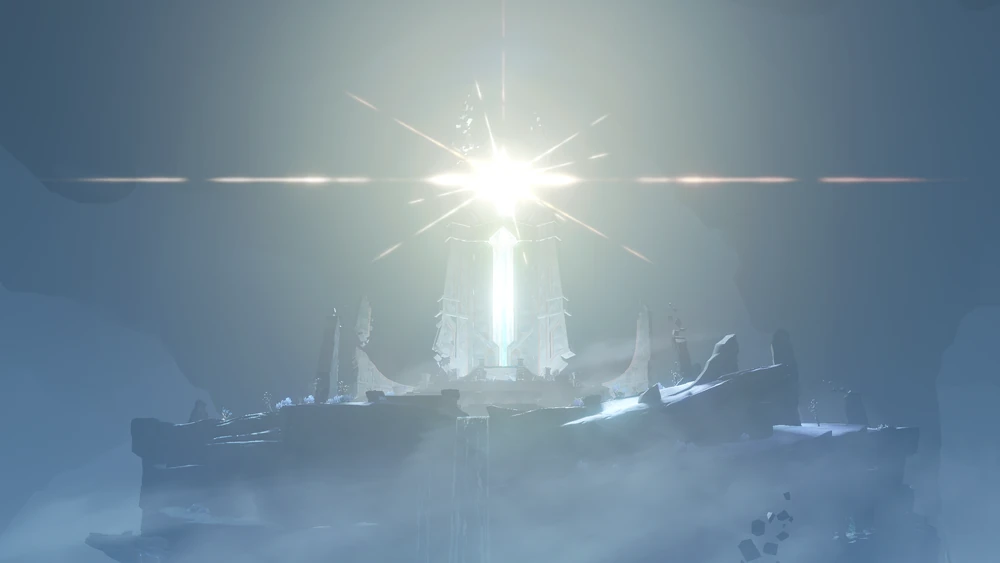
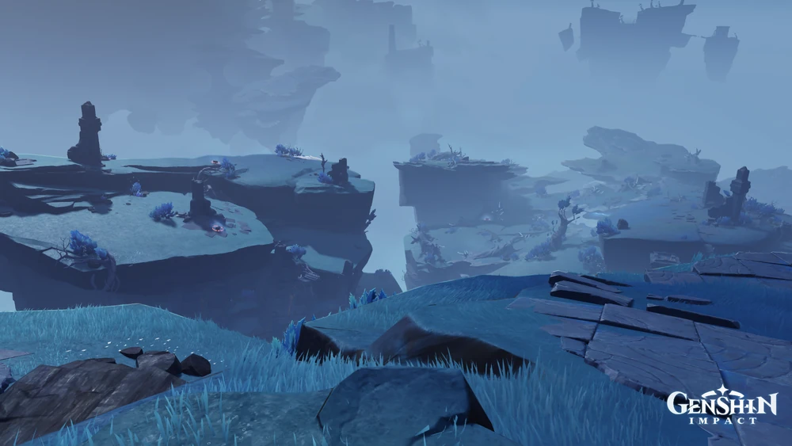
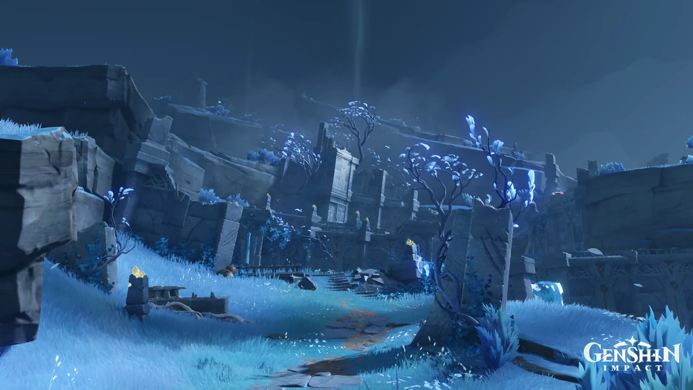
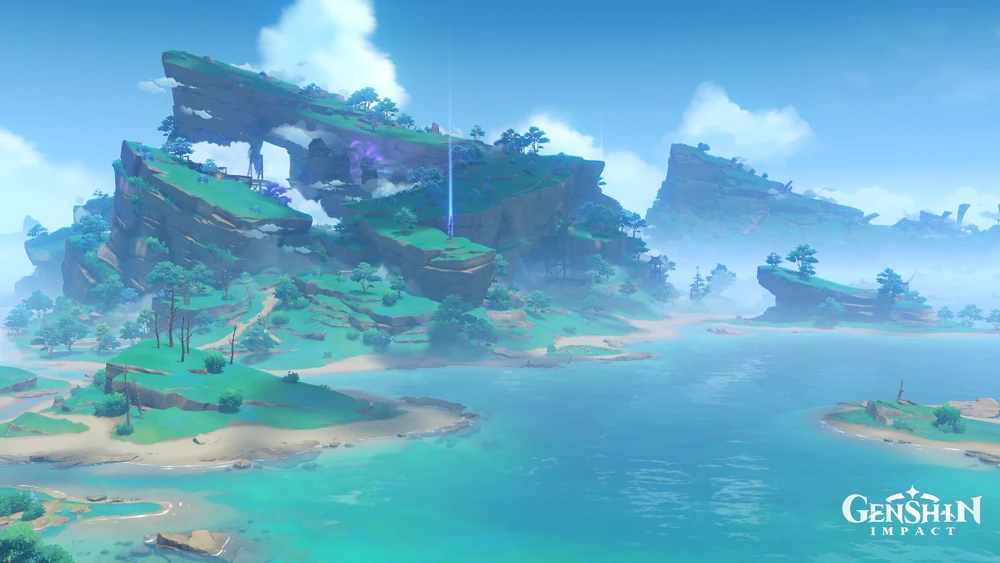
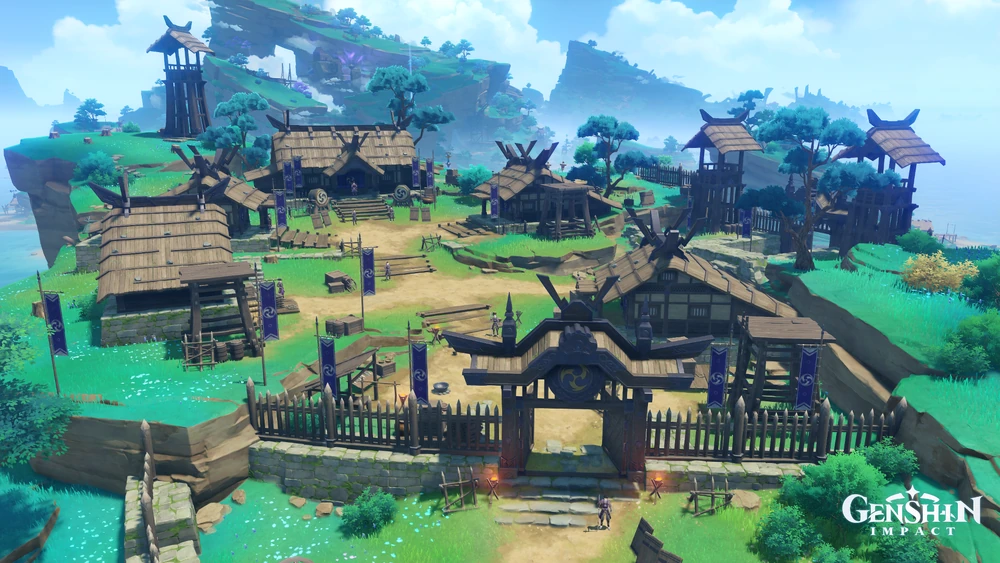
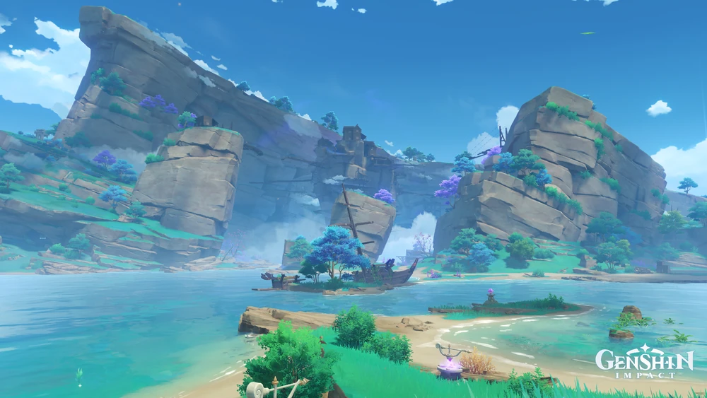

Escolha uma região no menu abaixo para saber mais sobre seus elementos,
Arcontes e cultura!
Inazuma
Conhecendo Inazuma
Inazuma é um arquipélago localizado no leste de Teyvat, conhecido como
a nação da eternidade. Formada por diversas ilhas cercadas pelo mar, a
região combina paisagens vulcânicas, florestas densas e vilarejos
tradicionais, refletindo uma cultura fortemente ligada à disciplina, à
tradição e à busca pela imutabilidade.
O elemento associado a Inazuma é o Electro, representado pelo raio. A
região é governada por Raiden Shogun, a Arconte Electro, cujo Decreto
da Visão Nula buscou eliminar a necessidade de Visões entre o povo,
gerando grande conflito interno na nação.
A cultura de Inazuma está profundamente ligada à eternidade, à
tradição samurai e ao respeito pelos kami. Seus habitantes valorizam a
permanência e a resistência ao tempo, características refletidas tanto
na arquitetura quanto nos costumes locais.
Inazuma é dividida em diferentes ilhas, cada uma com sua própria
paisagem e importância histórica, que vão desde arquipélagos
vulcânicos até santuários submersos e ilhas cobertas por tempestades
elétricas eternas.
Principais áreas de Inazuma
Inazuma é formada por diferentes áreas, cada uma com suas próprias
paisagens, características e locais importantes.
Enkanomiya é uma terra subaquática localizada abaixo de Watatsumi,
isolada do resto de Teyvat há milênios. O local nunca recebeu luz
solar, sendo iluminado apenas pelo Yorishiro do Sol Falso, um antigo
mecanismo criado pela deusa Orobashi. A região guarda segredos
ligados à guerra entre os antigos deuses de Inazuma.
Subáreas: Dainichi Mikoshi, Templo da Noite Eterna,
Locus de Kunado, O Estreito, As entranhas da serpente, O Coração da
Serpente, Locus de Yachimatahiko, Locus de Yachimatahime.
Dainichi Mikoshi

Imagem: GenshinImpactWiki
Dainichi Mikoshi é o mecanismo central de Enkanomiya, responsável
por gerar o Sol Falso que ilumina toda a região. O local abriga
estruturas tecnológicas avançadas construídas pelos antigos deuses.
Templo da Noite Eterna

Imagem: GenshinImpactWiki
O Templo da Noite Eterna é uma estrutura sagrada de Enkanomiya,
associada aos rituais antigos da região durante os períodos de
escuridão permanente.
Locus de Kunado
Imagem: GenshinImpactWiki
O Locus de Kunado é uma área de Enkanomiya marcada por mecanismos e
quebra-cabeças antigos, testando os viajantes que exploram suas
passagens.
O Estreito

Imagem: GenshinImpactWiki
O Estreito é uma passagem apertada dentro de Enkanomiya, conectando
diferentes partes da terra submersa através de corredores rochosos.
As entranhas da serpente
Imagem: GenshinImpactWiki
As entranhas da serpente fazem referência à Grande Serpente
Celestial Orobashi, cujo corpo gigantesco molda parte da geografia
interna de Enkanomiya.
O Coração da Serpente
Imagem: GenshinImpactWiki
O Coração da Serpente é considerado o núcleo simbólico do corpo de
Orobashi, guardando importância central nas lendas sobre a deusa
serpente de Enkanomiya.
Locus de Yachimatahiko
Imagem: GenshinImpactWiki
O Locus de Yachimatahiko é uma área de Enkanomiya nomeada em
referência a uma das antigas divindades associadas às encruzilhadas
e caminhos da região.
Locus de Yachimatahime
Imagem: GenshinImpactWiki
O Locus de Yachimatahime complementa o Locus de Yachimatahiko,
formando um par de áreas ligadas pela mitologia antiga de
Enkanomiya.
2. Kannazuka

Imagem: GenshinImpactWiki
Kannazuka é uma ilha vulcânica de Inazuma, marcada por formações
rochosas escuras e uma paisagem árida resultante de atividade
vulcânica. O local é um dos pontos de entrada para quem chega à
região pela primeira vez.
Subáreas: Acampamento Kujou, Tatarasuna.
Acampamento Kujou

Imagem: GenshinImpactWiki
O Acampamento Kujou é uma base militar operada pelo Clã Kujou em
Kannazuka, utilizada para vigiar e controlar o acesso à ilha durante
o período do Decreto da Visão Nula.
Tatarasuna

Imagem: GenshinImpactWiki
Tatarasuna é uma área industrial de Kannazuka, marcada por fábricas
abandonadas e máquinas Ruínas. O local foi palco de conflitos entre
os moradores locais e as forças do Xogunato durante a caça às
Visões.
3. Ilha Narukami
Imagem: GenshinImpactWiki
A Ilha Narukami é a ilha central de Inazuma, sede da Cidade de
Inazuma e do Grande Santuário Narukami. É a maior e mais populosa
área da região, reunindo diversas paisagens que vão de florestas a
vilas tradicionais.
Subáreas: Ilha Amakane, Araumi, Planície de Byakko,
Floresta Chinju, Grande Santuário Narukami, Cidade de Inazuma, Ilha
Jinren, Propriedade Kamisato, Vila Konda, Monte Yougou, Ritou.
Ilha Amakane
Imagem: GenshinImpactWiki
A Ilha Amakane é uma pequena ilha vizinha à Ilha Narukami, conhecida
por sua atmosfera tranquila e paisagens costeiras.
Araumi
Imagem: GenshinImpactWiki
Araumi é uma área submersa próxima à Ilha Narukami, acessível
através de missões específicas, guardando ruínas afundadas
relacionadas à história naval de Inazuma.
Planície de Byakko
Imagem: GenshinImpactWiki
A Planície de Byakko é uma extensa área aberta da Ilha Narukami, com
campos e trilhas que conectam diferentes pontos da ilha central.
Floresta Chinju
Imagem: GenshinImpactWiki
A Floresta Chinju é uma área densa e sagrada próxima ao Grande
Santuário Narukami, considerada terreno sagrado protegido pelos kami
da região.
Grande Santuário Narukami
Imagem: GenshinImpactWiki
O Grande Santuário Narukami é o principal templo religioso de
Inazuma, dedicado à Raiden Shogun. O local é administrado pela
sacerdotisa Yae Miko e é um importante centro espiritual da nação.
Cidade de Inazuma
Imagem: GenshinImpactWiki
A Cidade de Inazuma é a capital da nação, sede do Xogunato e
residência oficial da Raiden Shogun. É o centro político e
administrativo de toda a região.
Ilha Jinren
Imagem: GenshinImpactWiki
A Ilha Jinren é uma pequena área costeira ligada à Ilha Narukami,
conhecida por suas formações rochosas e vistas para o mar.
Propriedade Kamisato
Imagem: GenshinImpactWiki
A Propriedade Kamisato é a residência oficial do Clã Kamisato, uma
das famílias mais influentes de Inazuma, liderada por Kamisato Ayaka
e Kamisato Ayato.
Vila Konda
Imagem: GenshinImpactWiki
A Vila Konda é uma comunidade pesqueira tradicional da Ilha
Narukami, conhecida por seu porto movimentado e pela produção de
frutos do mar.
Monte Yougou
Imagem: GenshinImpactWiki
O Monte Yougou é uma montanha sagrada da Ilha Narukami, associada a
diversos templos e caminhos de peregrinação religiosa.
Ritou
Imagem: GenshinImpactWiki
Ritou é uma pequena ilha portuária que serve como ponto de chegada
para viajantes que desembarcam na Ilha Narukami vindos de outras
regiões de Inazuma.
4. Ilha Seirai
Imagem: GenshinImpactWiki
A Ilha Seirai é conhecida por suas tempestades elétricas eternas,
causadas por Aparelhos Elétricos deixados pela Raiden Shogun após um
antigo cataclismo. O local combina paisagens dramáticas com ruínas
antigas e templos abandonados.
Subáreas: "Seiraimaru", Pico Amakumo, Santuário de
Asase, Forte Hiraumi, Vila Koseki.
"Seiraimaru"
Imagem: GenshinImpactWiki
O "Seiraimaru" é um antigo navio encalhado na Ilha Seirai, hoje
coberto por vegetação e afetado pela energia elétrica constante da
região.
Pico Amakumo
Imagem: GenshinImpactWiki
O Pico Amakumo é o ponto mais alto da Ilha Seirai, oferecendo uma
vista das tempestades elétricas que cobrem permanentemente a região.
Santuário de Asase
Imagem: GenshinImpactWiki
O Santuário de Asase é um antigo templo dedicado a uma divindade
local, guardando relíquias e histórias ligadas à era anterior ao
domínio da Raiden Shogun.
Forte Hiraumi
Imagem: GenshinImpactWiki
O Forte Hiraumi é uma estrutura defensiva localizada na Ilha Seirai,
hoje parcialmente em ruínas devido à exposição constante às
tempestades elétricas.
Vila Koseki
Imagem: GenshinImpactWiki
A Vila Koseki é uma comunidade abandonada da Ilha Seirai, cujos
moradores tiveram que partir devido à intensidade das tempestades
elétricas na região.
5. Ilha Tsurumi
Imagem: GenshinImpactWiki
A Ilha Tsurumi é constantemente envolta em uma névoa espessa e
sobrenatural, resultado de eventos sombrios ligados à sua história.
O local é conhecido por seus perigos e pela presença de criaturas
ligadas ao mal que assombra a ilha.
O comércio e a vida na ilha foram prósperos abandonados após a névoa
tomar conta da região.
Subáreas: Planícies de Autake, Santuário de Chirai,
Sítio cerimonial de Moshiri, Monte Kanna, Praia de Oina, Pico
Shirikoro, Banco de areia de Wakukau.
Planícies de Autake
Imagem: GenshinImpactWiki
As Planícies de Autake formam uma extensa área aberta da Ilha
Tsurumi, frequentemente encoberta pela névoa característica da
região.
Santuário de Chirai
Imagem: GenshinImpactWiki
O Santuário de Chirai é um templo antigo da Ilha Tsurumi, ligado a
rituais realizados pelos habitantes originais da ilha antes de seu
desaparecimento.
Sítio cerimonial de Moshiri
Imagem: GenshinImpactWiki
O Sítio cerimonial de Moshiri é uma área sagrada usada para rituais
antigos, guardando segredos sobre os eventos que causaram a névoa
permanente da ilha.
Monte Kanna
Imagem: GenshinImpactWiki
O Monte Kanna é a maior elevação da Ilha Tsurumi, com trilhas
perigosas que atravessam a névoa densa característica da região.
Praia de Oina
Imagem: GenshinImpactWiki
A Praia de Oina é uma área costeira da Ilha Tsurumi, marcada por uma
atmosfera melancólica devido à névoa constante que cobre o litoral.
Pico Shirikoro
Imagem: GenshinImpactWiki
O Pico Shirikoro é uma formação rochosa elevada da Ilha Tsurumi,
oferecendo vistas parciais sobre a névoa que envolve a ilha.
Banco de areia de Wakukau
Imagem: GenshinImpactWiki
O Banco de areia de Wakukau é uma faixa costeira arenosa da Ilha
Tsurumi, marcando a transição entre a terra firme e o mar nebuloso
ao redor da ilha.
6. Ilha Watatsumi
Imagem: GenshinImpactWiki
A Ilha Watatsumi é o lar da Deusa Watatsumi, Sangonomiya Kokomi, e
foi o principal centro de resistência contra o Decreto da Visão Nula
do Xogunato. A região é marcada por paisagens serenas e vilas
tradicionais de pescadores.
Subáreas: Vila Bourou, Santuário de Mouun,
Santuário Sangonomiya, Piscina Suigetsu.
Vila Bourou
Imagem: GenshinImpactWiki
A Vila Bourou é uma comunidade pesqueira da Ilha Watatsumi,
conhecida por sua atmosfera pacata e pela forte conexão de seus
moradores com o mar.
Santuário de Mouun
Imagem: GenshinImpactWiki
O Santuário de Mouun é um templo tradicional da Ilha Watatsumi,
usado em cerimônias religiosas locais dedicadas aos kami da água.
Santuário Sangonomiya
Imagem: GenshinImpactWiki
O Santuário Sangonomiya é o templo principal da Ilha Watatsumi,
associado à família Sangonomiya e à liderança espiritual de Kokomi
sobre o povo local.
Piscina Suigetsu
Imagem: GenshinImpactWiki
A Piscina Suigetsu é uma área aquática serena da Ilha Watatsumi,
conhecida por seu reflexo espelhado da lua nas águas calmas.
7. Ilha Yashiori
Imagem: GenshinImpactWiki
A Ilha Yashiori foi um dos principais campos de batalha durante o
conflito entre o Xogunato e a resistência de Watatsumi, ainda
marcada por fortificações, minas e os vestígios de uma serpente
ancestral.
Subáreas: Forte Fujitou, Forte Mumei, Vila Higi,
Mina Jakotsu, Desfiladeiro de Musoujin, Praia de Nazuchi, Cabeça de
Serpente.
Forte Fujitou
Imagem: GenshinImpactWiki
O Forte Fujitou é uma fortificação da Ilha Yashiori usada pelas
forças do Xogunato durante o conflito contra a resistência local.
Forte Mumei
Imagem: GenshinImpactWiki
O Forte Mumei é outra estrutura defensiva da ilha, guardando
vestígios das batalhas travadas durante a Vindicação de Sangonomiya.
Vila Higi
Imagem: GenshinImpactWiki
A Vila Higi é uma comunidade da Ilha Yashiori que sofreu diretamente
os impactos do conflito entre o Xogunato e a resistência de
Watatsumi.
Mina Jakotsu
Imagem: GenshinImpactWiki
A Mina Jakotsu é uma área de mineração abandonada, hoje habitada por
criaturas hostis e repleta de passagens escuras dentro da ilha.
Desfiladeiro de Musoujin
Imagem: GenshinImpactWiki
O Desfiladeiro de Musoujin é uma passagem estreita entre penhascos
na Ilha Yashiori, utilizada estrategicamente durante os combates na
região.
Praia de Nazuchi
Imagem: GenshinImpactWiki
A Praia de Nazuchi é uma área costeira da Ilha Yashiori, marcando um
dos pontos de desembarque durante os conflitos vividos na região.
Cabeça de Serpente
Imagem: GenshinImpactWiki
A Cabeça de Serpente é uma formação rochosa em forma de serpente na
Ilha Yashiori, ligada às lendas ancestrais sobre criaturas
serpentiformes de Inazuma.